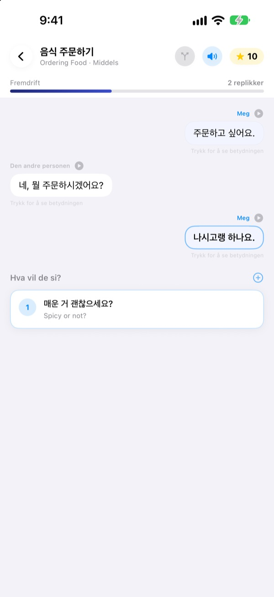
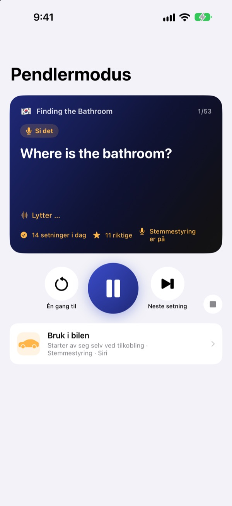
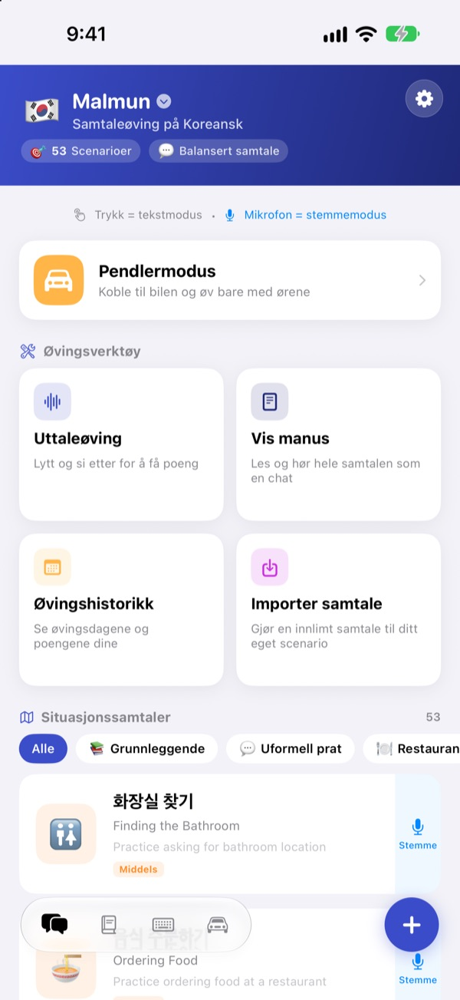
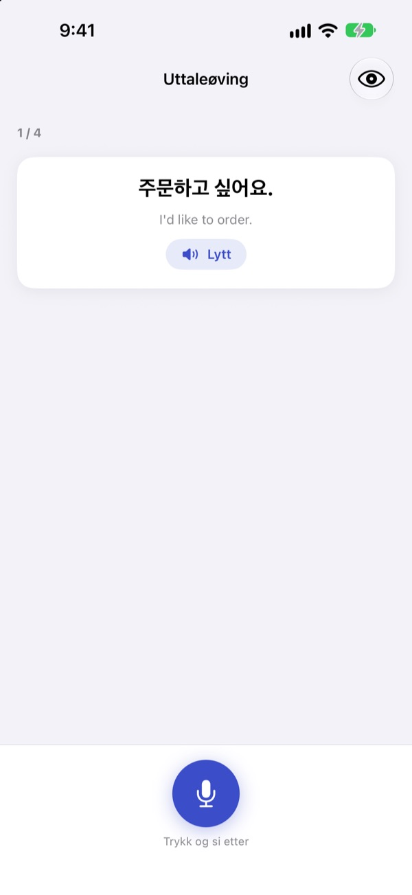

Slutt å gå i stå.
Si det først.
Malmun er en samtaletrener der hvert svar du velger sender dialogen i en ny retning. Lær koreansk, japansk, kinesisk, spansk eller indonesisk, og øv i bilen med bare ørene og stemmen.
Forgrenede samtaler, uttaleøving og ordliste er gratis.

Før samtalen videre selv
Dette er «God morgen», en indonesisk samtale akkurat slik den ligger i appen. Hver setning du velger, tar samtalen et nytt sted.
Kunne setningen, men ikke svaret?
I læreboka følger samtalene alltid manus. I virkeligheten svarer folk noe du ikke så komme. Med Malmun går du gjennom alle greinene i en samtale på forhånd, så neste setning ligger klar uansett hva som kommer. Til og med veien hjem blir øvingstid.
Øv med ørene mens du kjører
Pendlermodus spiller gjennom bilens høyttalere via Bluetooth eller CarPlay. Først hører du betydningen, etter et signal får du tid til å si det selv, og så spilles svaret én gang sakte og én gang i vanlig tempo.
Hopp videre og lytt igjen med rattknappene, eller si next, again eller slower når det er din tur. Den tar pause når navigasjonen gir beskjed.

Alle situasjoner fra reise og hverdag
Hvert språk har 53 situasjonssamtaler: det grunnleggende, hverdagsprat, restaurant, transport, flyplass, hotell, shopping, sightseeing og nødsituasjoner.
Lærer du indonesisk, får du mer: 5 håndskrevne småpratscenarier, 3 dagskurs med 6 scener hver og ukeplan, og 100 ord til jobbreisen.

Sjekk at du sa det riktig
Uttaleøvingen gir deg poeng og fargelegger ordene du traff og dem du bommet på.
I manusvisningen ligger hele samtalen som en chat. Hør den i ett strekk, eller skjul betydningene og test deg selv.

Kom i gang i tre steg
- 1
Velg språk
Trykk på flagget øverst på startskjermen. Setninger og ord lagres hver for seg for hvert språk.
- 2
Åpne en samtale
Trykk på svar i tekstmodus, eller trykk på mikrofonen og snakk: talemodus finner svaret som ligger nærmest.
- 3
I bilen: Pendlermodus
Koble iPhone til bilen og trykk på spill av. Du trenger ikke se på skjermen.
Styre Pendlermodus
- Ratt: neste spor
- Neste setning
- Ratt: forrige spor
- Samme setning én gang til
- Avspillingsknapp
- Pause og fortsett
next·skip- Neste setning
again·repeat- Hør igjen
slower·faster- Endre opplesingstempo
next scene- Til neste samtale
stop·pause- Slutt å øve
- Siri: «Start pendlerøving i Malmun»
- Start uten å røre iPhone
Når appen er på norsk, sier du talekommandoene på engelsk. De blir bare hørt når det er din tur etter signalet. Setningen som spilles, vises i bilens avspillingsinfo. Det finnes ingen egen appskjerm i CarPlay.
Nesten alt er gratis. Malmun Pro låser opp resten.
Gratis
- Forgrenet småprat og dagskurs (indonesisk)
- Situasjonssamtaler: det grunnleggende og hverdagsprat
- Pendlermodus, 3 scener om dagen
- Uttaleøving, manus, import av samtaler, øvingshistorikk
- Mine setninger, ordkort, setningstastatur
- Del scenarier med venner, lag scenarier med KI
Malmun Pro
- Alle situasjonssamtaler: restaurant, transport, flyplass, hotell, shopping, sightseeing, nødsituasjoner
- Pendlermodus uten grense
- Gjelder alle språk
Årsabonnement eller ett kjøp for alltid
Prisene står i appen og i App Store. Årsabonnementet fornyes automatisk med mindre du sier det opp senest 24 timer før perioden er over.
Vanlige spørsmål
Hvilke språk kan jeg lære?
Koreansk, japansk, kinesisk, spansk og indonesisk. Knapper og menyer er på norsk, men betydningen av setningene og talekommandoene er på engelsk. Derfor står ikke engelsk selv på lista.
Hvordan bruker jeg den i bilen?
Koble iPhone til bilen med Bluetooth eller CarPlay, åpne Pendlermodus og trykk på spill av. Lyden kommer fra bilens høyttalere, og setningen vises under Spilles nå. Du kan også si til Siri «Start pendlerøving i Malmun», eller én gang lage en automasjon i Snarveier-appen som starter når CarPlay (eller bilens Bluetooth) kobles til.
Lytter mikrofonen hele tiden?
Nei. Bare når det er din tur etter signalet, via iPhone-mikrofonen, og det den hører, behandles på enheten.
Uttalen min blir ikke gjenkjent.
Talegjenkjenningen kjører på språket du lærer. Prøv et roligere sted, og sjekk at talegjenkjenning for språket er lastet ned på enheten.
Hvordan legger jeg til tastaturet?
Gå til Innstillinger ▸ Generelt ▸ Tastatur ▸ Tastaturer ▸ Legg til nytt tastatur, og velg Malmun-tastaturet. Trykk på jordkloden mens du skriver for å bytte. Full tilgang trengs ikke. Vil du vise færre setninger, trykker du på tastaturikonet nede til høyre på startskjermen ▸ Administrer tastatur.
Jeg ser ikke et scenario en venn har delt.
Deling går via iCloud, så dere må begge være logget på iCloud. Dukker det fortsatt ikke opp, lukk appen helt og åpne den igjen.
Hva trengs for å lage scenarier med KI?
Legg inn din egen Anthropic-API-nøkkel i appen og skriv et tema, så lages en ny samtale. Alt annet fungerer uten nøkkel.
Hvordan sier jeg opp eller får refusjon?
Betalinger håndteres av Apple. Si opp i Innstillinger på iPhone ▸ Apple-konto ▸ Abonnementer ▸ Malmun. Refusjon ber du Apple om på reportaproblem.apple.com.
Ny iPhone, og Pro er borte.
Logg på med samme Apple-konto, og trykk i Malmun på Innstillinger ▸ Malmun Pro ▸ Gjenopprett kjøp.
Hvor lagres fremgangen min?
Du trenger ingen konto. Dataene blir på enheten og i din egen iCloud. Ingen reklame og ingen sporing, bare anonym bruksstatistikk og feilrapporter. Feil og ønsker tas også imot på GitHub Issues (github.com/M1zz/IndonesianSmallTalk/issues).
Spørsmål eller tilbakemeldinger? Skriv til leeo@kakao.com, bruk Innstillinger ▸ Send tilbakemelding i appen, eller finn oss på Instagram: @lee25_ios.